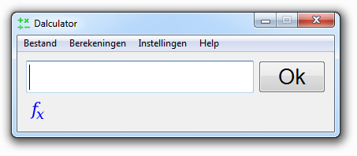

De basis
Deze pagina legt uit hoe u berekeningen kunt doen met Dalculator.
Het is eigenlijk erg simpel, wanneer u Dalculator opstart zal het er zo uit zien:

Type gewoon uw berekening in het invoer vakje, en druk dan op Enter of klik op Ok.
Bijvoorbeeld: u wilt weten wat (5+2)*3 is, dan typt u simpelweg: (5+2)*3 en drukt u op Enter of klikt u op Ok.
Het antwoord zal nu in het invoer vakje verschijnen, in dit geval is dat uiteraard 21.
De operatoren
Dalculator is vooral gemaakt voor snelle simpele berekeningen, maar er zitten veel operatoren in ingebouwd. De volgende operatoren zijn ingebouwd:
| Operator | Prioriteit | Wat doet het |
| x^y | Eerste | Geeft de ye macht van x |
| x~y | Eerste | Geeft de ye wortel van x dit is gelijk aan x^(1/y), dus x~2 is de vierkantswortel x |
| x*y | Tweede | Vermenigvuldigt x met y |
| x/y | Tweede | Deelt x door y |
| x%y | Tweede | Geeft de rest van x/y |
| x+y | Derde | Telt x bij y op |
| x-y | Derde | Trekt y van x af |
| x<y | Vierde | Vergelijkt x met y, en geeft 1 als x kleiner is dan y als dat niet zo is geeft hij 0 |
| x>y | Vierde | Vergelijkt x met y, en geeft 1 als x groter is dan y als dat niet zo is geeft hij 0 |
| x&y | Vijfde | Berekend de bitwise and van x en y |
| x|y | Vijfde | Berekend de bitwise or van x en y |
| x=y | Zesde | Maakt x gelijk aan y, x moet een variabele zijn! |
De operatoren met de eerste prioriteit zullen als eerste uitgerekend worden, daarna de operatoren met de tweede prioriteit, etc. Dit is dus hetzelfde als in de wiskunde. En net zoals in wiskunde kunt u haakjes gebruiken om iets voorrang te geven boven al het andere. Bijvoorbeeld: 2+5*3 wordt 17 (2+15), maar (2+5)*3 zal resulteren in 21 (7*3) Denk er altijd aan de haakjes te sluiten!
Hexadecimaal en octaal
In Dalculator kunt u gebruik maken van hexadecimale en octale getallen.
U kunt bijvoorbeeld schrijven: 2*0xff, omdat 0xff gelijk is aan 255 in het decimale stelsel, zal de uitvoer gelijk zijn aan: 510.
U kunt dus hexadecimale getallen gebruike door eerst 0x te schrijven en dan het hexadecimale getal (hoofdletter ongevoelig).
Octale getallen kunt u op een vergelijkbare manier gebruiken, type eerst een 0 en dan het octale nummer, bijvoorbeeld: 072 (dat is 58 in het decimale stelsel).
U kunt aangeven of de uitvoer decimaal (255), wetenschappelijk (2.55e2), hexadecimaal (0xff), octaal (0377), binair (11111111), tijd (zie Rekenen met tijd) or automatisch (kiest automatisch tussen decimaal, wetenschappelijk of tijd) moet zijn. Merk op dat, ondanks dat je wel binair als uitvoertype kan kiezen, je geen binaire getallen als invoer kan gebruiken. Merk ook op dat het niet mogelijk is komma-getallen te gebruiken met hexadecimale en octale getallen (bijvoorbeeld: u kunt niet 1.5 in het octale stelsel schrijven, maar u zou wel het volgende kunnen schrijven: 01+05/10). Dit betekent dat hexadecimale, octale en binaire uitvoer ook afgerond wordt.
Rekenen met tijd
Dalculator kan met tijd rekenen, bijvoorbeeld: 2*01:30:00 zal als uitvoer 03:00:00 hebben (als het uitvoer type tijd of automatisch is).
Tijd wordt als eenheid gebruikt, niet als datum. Dus 12:00 + 14:00 (12 uur + 14 uur) is simpelweg 26:00:00 (26 uur).
Als u een tijd in een variabele opslaat (zie Wat zijn variabelen voor meer info) zult u merken dat de tijd in seconden wordt opgeslagen: a = 1:30, a is nu 5400.
Er zijn meerdere manieren om tijd als invoer te gebruiken, u kunt hours:minutes schrijven of hours:minutes:seconds.
Het is mogelijk 0:77 te schrijven (0 uur en 77 minuten), dat is precies hetzelfde als: 1:17.
Het is mogelijk 3 decimalen achter de secondes toe te voegen, wat betekent dat de kleinste tijdeenheid die u in kan geven 1 milliseconde is.
Bijvoorbeeld: 3:24:56.32 is: 3 uur, 24 minuten, 56 seconden en 320 milliseconden.
Overige opmerkingen
Niet alleen hele getallen zijn toegestaan, ook getallen met decimalen zijn toegestaan.
Maar in plaats van een ',' wordt een '.' gebruikt, het is dus 1.5 in plaats van 1,5.
De komma's worden voor iets anders gebruikt (zie Wat zijn functies voor meer info).
U kunt ook spaties en tabs gebruiken waar u maar wilt, deze worden toch genegeerd.
Uitzondering hier op zijn namen van variabelen en functies, voor meer informatie over namen zie: Variabelen & functies namen geven.
Dus 100 000 * 2 is gelijk aan 100000*2.